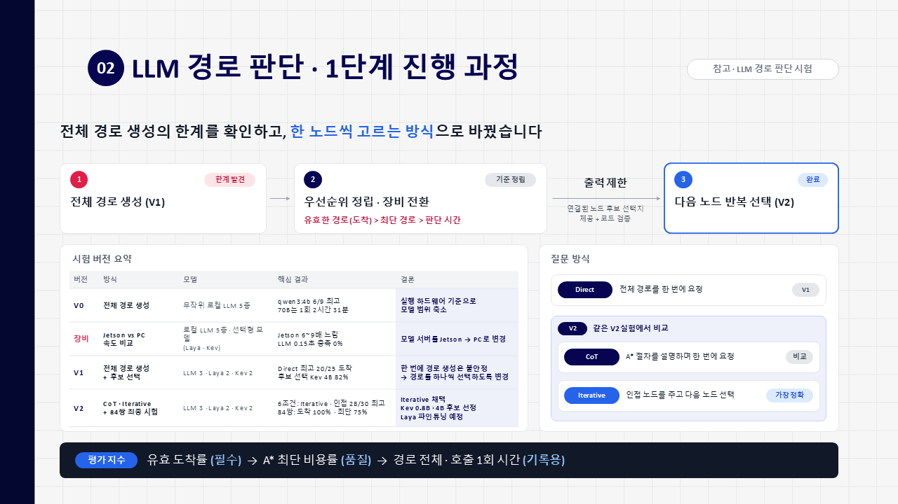
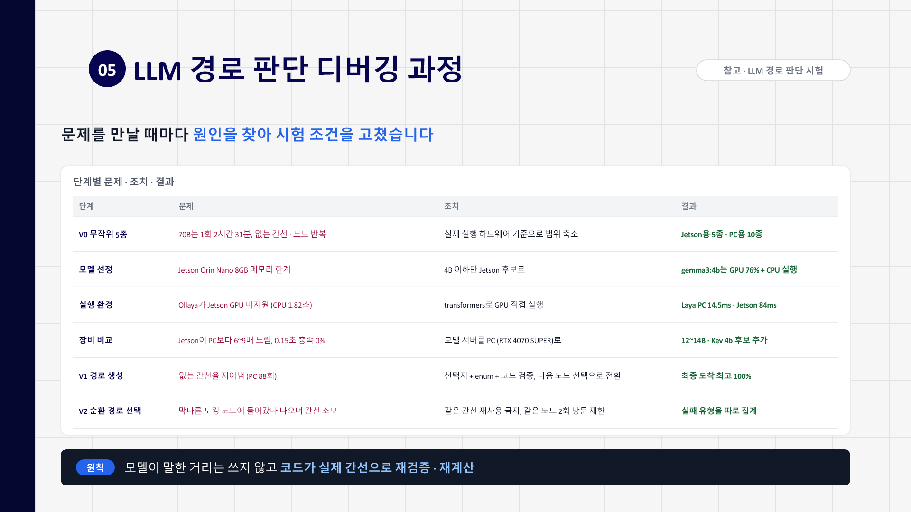
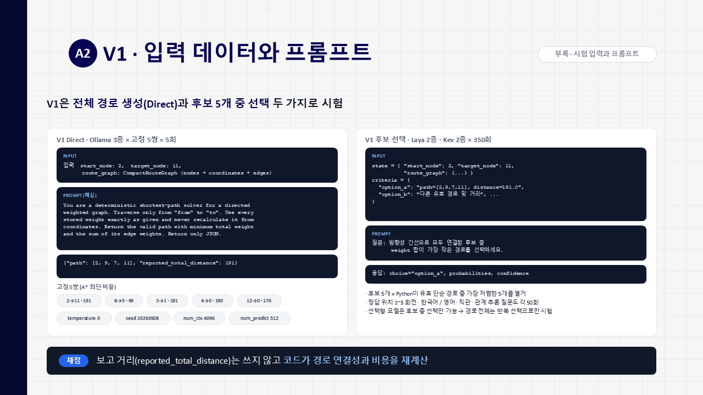
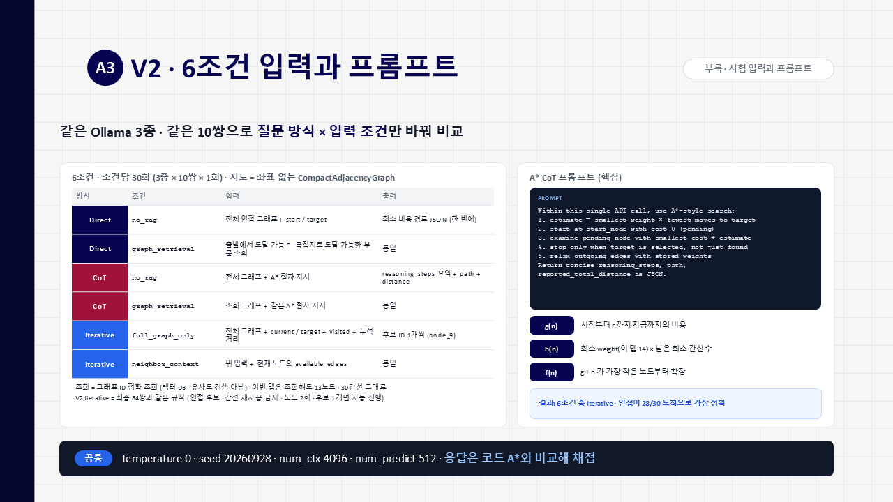
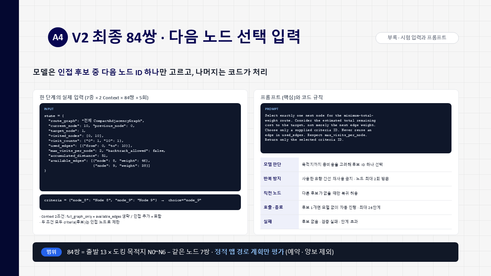

01 · 팀 E1I6
진행 중
담당 파트 · FMS AI
팀 7명
LLM 경로 생성
AX MULTI-ROBOT LOGISTICS
개인 담당 01 · 디자인 및 프론트엔드
FMS UI 설계 · React 구현
Figma와 Claude AI를 활용해 관제 UI 설계
ChatGPT와 Figma를 활용해 React 프론트엔드 구현
지도 · 로봇 상태
목적지 · LLM 경로
주행 조작 · 시뮬레이션
개인 담당 02 · AI·LLM
진행 중최단 경로 생성·주행 · AI 충돌 예측
AI 모델 테스트·비교 후 최단 경로를 생성해 주행하도록 구현했습니다.
현재 AI 기반 충돌 모니터링·예측 기능을 구현 중이며, 이후 최적 경로 판단에 반영할 예정입니다.
AI 모델 선정 · 비교
Iterative · 84쌍 경로 검증
최단 경로 주행
AI 충돌 모니터링·예측 구현 중
최적 경로 반영 예정
ROS 2 / MQTT 로봇 연동 · A* 탐색 알고리즘 및 예외 처리는 팀원 담당
핵심 기능 시연 · 전체 시나리오
YouTube에서 보기
개인 담당 · FMS AI
LLM 경로 판단
비교 기준 수립 → 조건별 실험 → 모델·방식 선정
- 논문 검토 · 비교 기준 선정논문의 Dijkstra·A* 비교 결과를 검토했습니다. 같은 최단 경로를 더 적은 노드 탐색으로 찾는 A*가 단일 목적지와 좌표 정보가 있는 프로젝트에 적합하다고 판단해, LLM 경로 평가 기준으로 선정했습니다.
- 조건별 실험PC·Jetson 실행 환경, Direct·CoT·Iterative 생성 방식, 전체 그래프·인접 노드 입력을 비교했습니다. 최종적으로 7개 모델을 2개 입력 조건에서 84쌍 × 5회, 총 5,880회 평가했습니다.
- 선택 정확도 개선인접 노드를 하나씩 선택하는 Iterative 방식이 6조건 비교에서 30회 중 28회 도착했습니다. 이 방식에 연결 검증·재방문 제한을 적용해 없는 간선과 반복 경로를 줄였습니다.
- 모델 선택 조건과 우선순위도착률·최단 경로 일치율·응답 시간을 비교하고, 도착 안정성을 우선해 Kev 0.8B + 인접 정보를 채택했습니다. 최단 경로 비율이 높은 Kev 4B + 전체 그래프는 대안으로 비교했습니다.
현재 경로 탐색 규칙과 한계
- 노드별 총 방문 횟수는 최대 2회로 제한합니다.
- 같은 방향성 엣지는 한 번만 사용합니다.
- 다음 후보를 고를 때 직전 노드를 우선 제외합니다.
- 후보가 없을 때만 미사용 역방향 엣지를 통한 backtrace를 허용합니다. 이때도 노드 방문 제한을 적용합니다.
반복 탐색 중 경로 생성에 실패할 수 있으며, 이 규칙만으로 도착이나 최단 경로를 보장하지 않습니다.
LLM 경로 판단 발표자료
팀 발표자료 · 11장
1 / 11










버튼 또는 좌우 스와이프로 넘길 수 있습니다.
채택 · Kev 0.8B + 전체 그래프·인접 정보
도착 420/420 (100%) · 최단 비용 일치 52.4%
경로 생성 시간 중앙값 0.409초
비교 대안 · Kev 4B + 전체 그래프
도착 400/420 (95.2%) · 최단 비용 일치 75.0%
경로 생성 시간 중앙값 0.613초
모델 7종 × 입력 2종 × 84쌍 × 5회 = 5,880회 평가. 도착 안정성을 우선해 선정한 모델을 시뮬레이션 주행에 연결했습니다.
AI 기반 충돌 모니터링·예측
진행 중AI 기반 충돌 모니터링·예측을 구현 중입니다.
이후 예측 결과와 하드웨어·주행 환경을 고려한 최적 경로로 확장할 예정입니다.